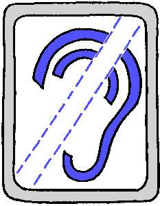
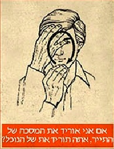
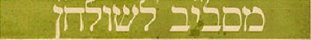
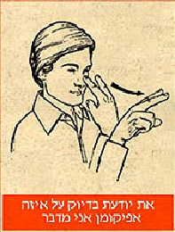
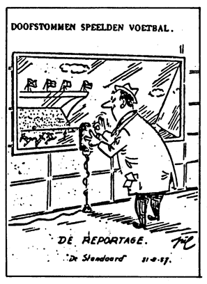
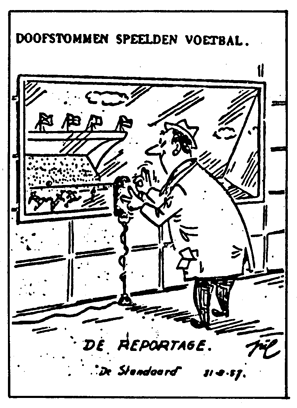

Humor and stories for interpreters: The world of Deaf humor
David Bar-Tzur
Links updated monthly with the help of LinkAlarm.
The image above is from Isat Sex Sign Language Translation.
 means a video in the Sign Language of the country under which it is listed.
means a video in the Sign Language of the country under which it is listed.
 Brazil
Brazil
 anderson8tavares. (2008, July 1). Cantada. Vídeo da Casa da Cultura do Silêncio.
anderson8tavares. (2008, July 1). Cantada. Vídeo da Casa da Cultura do Silêncio.
Havaiana commercial with interpreter.
 France
France
2 AS. Les pictosourds n°1. Below are a few examples of the humorous ears created by
Marc Renard and drawn by Yves Lapalu and shown on this webpage. To see what they
represent when you go to the webpage (written in French), put your cursor over the ???

Above: Deaf Catholic, Hard-of-hearing person, person with a cochlear im"plant", fake deaf person.
Surgeon: "Hey, come here! You'll be able to hear if I perform this surgery."
Fleeing boy: "Never! I'm not crazy. I'd rather be deaf. Help!"
"And you want to do that to my head? Are you crazy?"
Doctor (screaming at the top of his lungs): "I said, 'How long have you been deaf?'"
Patient (responding): "What's that you say?"
2 AS. La Pédilogie: Aphabet pédestre des sourdes-muets sans mains. [Pedology: A pedal alphabet for deaf people without hands.]
junkam. (2007, May 13). Sex For The Deaf.
 Germany
Germany
Dein Suchergebnis zu "deafabdola".
Captions for Paul's 100 Deaf jokes.
Visualbrain - visualfun. If you can't read German, watch the videos and use these translations:
Wozu wir Ohren haben (Why we have ears).
Die wundersame Welt der Gehörlosen * Kapitel 38 * The wonderous world of the Deaf *Chapter 38 *
Vielleicht zur Dekoration? Perhaps for decoration?
Oder weil wir ohne ziemlich blöd aussehen würden. Or because without them we would look rather stupid.
Das Essverhalten der Tauben (The eating habits of the Deaf/Doves). It's a pun, because Tauben can mean either one.
Die wundersame Welt der Gehörlosen * Kapitel 77 * The wonderous world of the Deaf * Chapter 77 *
Gebrochenes Deutsch Broken German.
Die wundersame Welt der Gehörlosen * Kapitel 88 * The wonderous world of the Deaf * Chapter 88 *
Musikgenuss für Gehörlose Music aprreciation for the Deaf.
Die wundersame Welt der Gehörlosen * Kapitel 4711 * The wonderous world of the Deaf * Chapter 4711 *
Ein Gehorloser in Musikgeschaft?! A Deaf person in a music store?!
Kauft wohl erlesene CDs! He loves to buy choice CDs! (Perhaps a pun on lesen which means to read, since he just kept the reading material and put back the recording.)
Ohren zu und durch Close your ears and go for it. This is a pun on Augen zu und durch Close your eyes and go for it.
Die wundersame Welt der Gehörlosen * Kapitel 13 * The wonderous world of the Deaf * Chapter 13 *
Und nicht beim Essen stören lassen. And don't let my eating disturb you.
Warum Gehörlose so gerne Kopfhörer tragen Why Deaf people enjoy headsets.
Die wundersame Welt der Gehörlosen * Kapitel 815 * The wonderous world of the Deaf * Chapter 815 *
Weil so kalt der Winter. Because it gets so cold in the winter.
Wie Gehörlose eine Straße überqueren How Deaf people cross a street.
Die wundersame Welt der Gehörlosen * Kapitel 468 * The wonderous world of the Deaf * Chapter 468 *
Links, rechts, links geschaut. Look left, right, and then left.
Und drüber ist der Gehörlose. And the Deaf person walks the same way.
Wie man Gehörlose zum Schweigen bringt How to keep a Deaf person quiet.
Die wundersame Welt der Gehörlosen * Kapitel 63 * The wonderous world of the Deaf * Chapter 63 *
Benimmregeln für Gehörlose Deaf etiquette.
Die wundersame Welt der Gehörlosen * Kapitel 54 * The wonderous world of the Deaf * Chapter 54 *
Mit vollem Mund spricht man nicht. Don't talk with your mouth full.
 Israel
Israel
Below is a rather obscure piece of humor. Someone in Israel has taken pictures of ASL signs (not Israeli Sign Language) and used them as humor about the Pesach Seder (ritual meal eaten Passover night to commemorate the Exodus from Egypt under Moses). I can't find anyone to translate the Hebrew better than I have, so if you have any improvements, please let me know.
At Uncle Josh's for Passover 2006:
A guide to Passover abroad at my Deaf Uncle's.
Going shopping.
|  |
|
|
|
| If I take off my tourist's mask, will you take off your crook's mask? |
No, no, I'll wait. I was just hoping you had a comb for my beard. |
Do I look like a striped stripe? |
Had you asked me, that's more or less how much I thought of taking out. |
|
|
|
|
| The store logo is terrific, but is it possible to gift wrap it? |
Look me in the eyes and tell me honestly, do I need a Pyrex cover? |
The cemeteries are full of people that didn't pamper holiday buyers. |
Stop complaining about your store, and show me more jewelry please. |

At the dinner table.
|
|
 |
|
| I recognize this present from somewhere. |
No, thank you. I' m finished with the chicken. |
No, really! |
What kind of work do I do? Let's just say, in L.A. I'm known as Pedro. |
|
|
|
 |
| Is it just me, or did Grandma's stomach just yell, "Plumber!" |
Everyone likes to dip their pinkie [in the wine], but you have to wait your turn. |
I found a tick in my chazeret. Is that supposed to be a side dish? |
Excuse me. Can I read the part about Ben Zoma and the breasts? |
|
|
| I left to make room for the main course. |
So you're telling me, one telephone call and I will know how to prepare egg noodles? |

At Uncle's house
|
 |
|
|
| You're a captivating girl, but you drink too much. |
You know exactly which afikomon I'm talking about! |
You'll know on your own when you need to stop drinking. |
Just the opposite. It's perfectly natural for uncles to worry about each other. |
|
|
|
|
| DO you like music? |
One more shot and you'll start to feel dizzy. |
I'm sure you understand I have to take my bridge out every once in a while. |
Aunt Knaidlach went to sleep and kept Uncle Josh's secret. |
Italy
First dance partner: Why do you like this dance club? Why do you like...
(Yelling:) Why... Second dance partner (signing): What's that?
Translation: This TV is astounding, and it has such a great picture. (Looks at screen.)
Too bad it doesn't come with a microscope to read the captioning!
(Both cartoons above are from La pagina del fumetto.)
Superman Sordo. Humor 2007. Several countries are represented here, including the U.S.
Zeennee86. Telegiornale per non udenti. Le notizie sono le più attuali, le risate le più fragorose. [Telejournalism for the hearing-impaired, where the stories are the most current and the laughter is deafening.]
 (2007, February 27). Tg per non udenti (03).
(2007, February 27). Tg per non udenti (03).
(2007, February 24). Tg per non udenti (02).
(2007, February 22). Tg per non udenti (01).
To see the real thing (no joke), go to TG4 Edizione non udenti - AOL Video.
Japan
Japanese Culture and Japanese Deaf Culture. Scroll down to "3. Deaf Joke" and read 3-1 through 3-3. They are not so funny in translation, but they do show something of the Japanese attitude towards deaf people.
 Jordan
Jordan
From Mahjoob's House: Daily cartoon.
The interpreter depicted in this political cartoon is a guy I saw quite
a bit of while in Jordan. He does the "bubble" thing on the evening news on Jordan TV's channel 1. There is also a family show which gets interpreted (I helped with a grass-roots effort to get that off the ground while I was out there), so lots of folks are exposed to the sign language of Jordan, and the interpreters are familiar faces.
The caption in the last frame of the cartoon reads, loosely, "... and
that was the news in Palestine and Iraq, in Sign Language!!"
- Dan Parvaz
 Netherlands

Netherlands

Deafmute soccer commentator.

Warning sign: Deaf hippo crossing.
Cover from a Dutch book entitled "Sign Language dictionary for children."
Title at top of cartoon: "Deaf people demonstrate in a courtyard for recognition of Sign Language."
Man in the street says: "Well, I see this as a first step towards recognition."
Stoter, T.
(7 October 2006). Hoe laat is het?
(23 December 2005). Happy Holidays!
(30 September 2005). Hier waak ik.
(23 August 2005). Deafmovies.
Switzerland
impronaut. (2007, February 20). Die Impronauten aus Basel: Gebärden: Seehund mit Tischler. Not real sign language, but a funny improv on an interview about seals and carpenters. I think the "interpreter" is fun to watch even if you don't understand German.
JUNIOR'94 en suisse !!! Junior for DEAF - Junior pour SOURD - Jüngeres für TAUBES - Junior per SORDO - Joven para SORDO !!! NOUVELLES - HISTORIQUE - ACTIVITES - PHOTOS - DOWNLOAD - CONTACT - LIENS - WEB VIDEO.Click on "Junior '94" in the upper lefthand corner, then "Web vidéo", then on a specific video box. WARNING!: Some of these videos are obscene.
The sign for the Deaf restaurant, Café des Signes, in Geneva.
Thailand
Deaf Thai. coffee nescafe.,
 United Kingdom
United Kingdom
(From http://melows.blogspot.com/ (MMBLOG), which is no longer extant.)
(BSL = British Sign Language. From MMBLOG.)
SirDavidHay. (2008, March 20). Never Trust An Interpreter (subtitled)., When Chris the Nerd confesses to his mate that he has never been with a girl it sets off a disasterous plan to get his first succesful lay! Never trust an interpreter is a story of what can go wrong when you enlist the help of your friend and an interpreter for a date.
When Chris the Nerd confesses to his mate that he has never been with a girl it sets off a disasterous plan to get his first succesful lay! Never trust an interpreter is a story of what can go wrong when you enlist the help of your friend and an interpreter for a date.
Swinbourne, C. Four Deaf Yorkshiremen (subtitled).,How hard was growing up deaf? In this comedy sketch, four old deaf men try to tell the worst story about their childhood - and there's ten pounds on the table for the 'winner!' The film was inspired by the classic 'Four Yorkshiremen' sketch made famous by Monty Python, but with a new script for a deaf cast. Written and directed by Charlie Swinbourne, made in association with Remark Production.
Return to the table of contents for "Humor and stories for interpreters".

Home